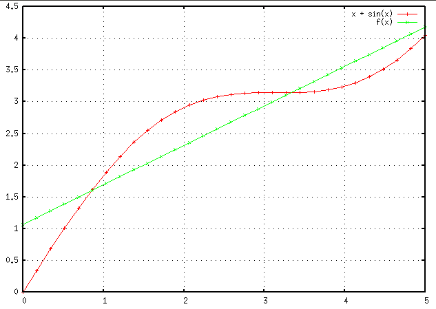

節のはじめに説明したように最小二乗法の解は$\bm{\beta}^* = (\bm{X}^\top \bm{X})^{-1} \bm{X}^\top \bm{y}$と表すことができます．
では実際にEigen C++ライブラリを用いて$\bm{\beta}^*$を求めていきます．
直接法(LU分解,コレスキー分解)
最小二乗法の解$\bm{\beta}^* = (\bm{X}^\top \bm{X})^{-1} \bm{X}^\top \bm{y}$は
\[
\begin{align*}
(\bm{X}^\top \bm{X}) \bm{\beta} &= \bm{X}^\top \bm{y} \\
&\downarrow \\
\bm{A} \bm{\beta} &= \bm{b}
\end{align*}
\]
として連立一次方程式の解として求めることができます（勿論、$(\bm{X}^\top \bm{X})$の逆行列を計算して$\bm{\beta}^* = (\bm{X}^\top \bm{X})^{-1} \bm{X}^\top \bm{y}$を求めることもできますが、逆行列の計算コストや数値計算誤差が増大してしまいます）．
これをガウスの消去法やコレスキー分解などを用いて解く方法は直接法と呼ばれます．
以下、ピボット選択付きLU分解とコレスキー分解を用いた実装を示します．
// LU分解（ランク落ちにも対応）
VectorXd beta = (X.transpose() * X).fullPivLu().solve(X.transpose() * y);
// コレスキー分解
VectorXd beta = (X.transpose() * X).ldlt().solve(X.transpose() * y);
Eigen には様々な連立一次方程式のソルバーが実装されており、それぞれのソルバーの特性は
こちらで説明されています．
実際に最小二乗法を用いて$x + sin(x)$という関数を近似する例を以下に示します．
int n = 30;
// データの作成
VectorXd x0 = VectorXd::Ones(n); // バイアス項
VectorXd x1 = VectorXd::LinSpaced(n, 0, 5);
MatrixXd X(n, 2);
X << x0, x1;
VectorXd y = x1.array() + x1.array().sin();
// Cholesky分解
VectorXd beta = (X.transpose() * X).ldlt().solve(X.transpose() * y);
// 出力
VectorXd f = X * beta;
全体のプログラムは
こちらから入手することができます．ただし、図の出力のために導入で説明した Gnuplot interface を利用しています．
プログラムの出力結果は以下となり、赤線が$x+sin(x)$を示し、緑線が$f(\bm{X}; \bm{\beta}) = \bm{X} \bm{\beta}$を示しています．
